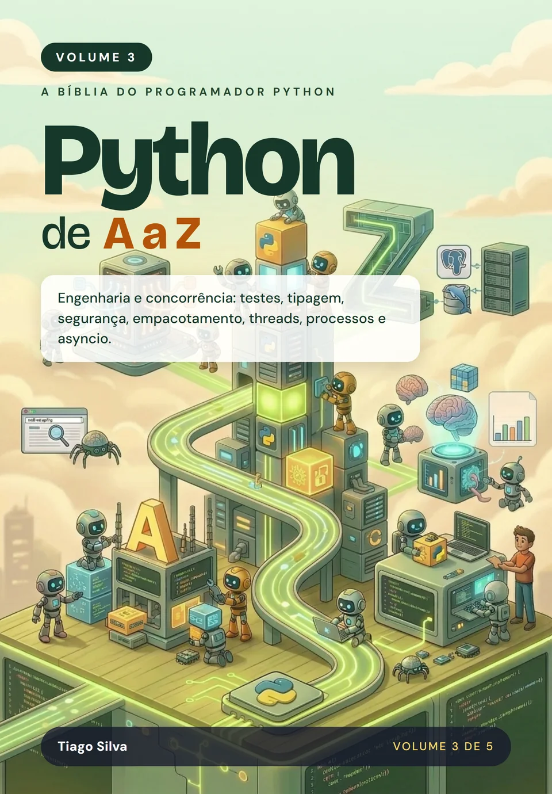

Python de A a Z: Engenharia e concorrência
por Tiago Silva
Escreva Python que outras pessoas conseguem manter e que faz várias coisas ao mesmo tempo: projetos, testes, tipagem, SOLID, segurança, performance, threads, processos e asyncio.
- Páginas
- 426
- Idioma
- Português
- Publicação
- 10/2026
- Versão do Python
- 3.15
- Formatos
- Impresso e e-book (ePub)
Sobre este livro
Do script que funciona ao software profissional
Escrever código que roda é só o começo. Fazê-lo sobreviver a anos de manutenção, a um time inteiro e a muitos usuários é engenharia. A primeira parte deste volume cobre estrutura de projetos, dependências, logging, testes automatizados, estilo, tipagem estática, os princípios SOLID, segurança, profiling, documentação, empacotamento e design de APIs: o que um projeto Python precisa ter para ser levado a sério.
A segunda parte é de concorrência: como escolher entre threads, multiprocessamento, concurrent.futures e asyncio, o que o GIL realmente limita e o que muda com o free-threading do Python 3.15. Tudo com medições, para você decidir com números, e não por moda.
É o volume que mais se aproxima do dia a dia de uma equipe: testes, qualidade, segurança e desempenho são cobrados em vagas de desenvolvimento Python plenas e sêniores. Dominar esses assuntos é o que transforma quem programa em quem projeta sistemas, e completa o caminho para ser um especialista Python.
Por onde começar
Se você nunca programou, comece pelo Volume 1. Este volume pressupõe a base dos Volumes 1 e 2, não os livros em si: se você já escreve classes com __init__, __repr__ e herança, usa decoradores e escreve geradores, pode começar daqui. Se faltar algo, o Volume 2 cobre. Os cinco volumes formam a coleção completa, mas cada um se sustenta sozinho.
O que você vai aprender
- Estruturar projetos, gerenciar dependências e configurar logging
- Escrever testes automatizados e manter o estilo e a qualidade do código
- Usar tipagem estática e aplicar os princípios SOLID em Python
- Programar com segurança, medir a performance (profiling) e proteger segredos
- Documentar, empacotar e publicar no PyPI, e projetar APIs que se refatoram bem
- Escolher entre threads, multiprocessamento, concurrent.futures e asyncio
- Decidir sobre concorrência com base em medições, incluindo o free-threading do Python 3.15
Sumário
19 capítulos. Toque em um item para ver do que ele trata.
1Estrutura de Projetosp. 39
2Gerenciamento de Dependênciasp. 57
3Loggingp. 77
4Testes Automatizadosp. 101
5Estilo e Qualidade de Códigop. 125
6Tipagem Estáticap. 147
7Princípios SOLID em Pythonp. 171
8Segurança e Programação Defensivap. 193
9Profiling e Performancep. 215
10Documentação de Código e de Projetosp. 237
11Empacotamento e Publicação no PyPIp. 257
12Configuração e Gerenciamento de Segredosp. 279
13Design de APIs e Refatoraçãop. 301
14Escolhendo o Modelo de Concorrênciap. 329
15Threads e Concorrênciap. 345
16Multiprocessamentop. 363
17concurrent.futuresp. 379
18Programação Assíncrona com asynciop. 393
19Free-Threading e Subinterpretadoresp. 411
Avaliações
O que os leitores dizem
Texto da avaliação.